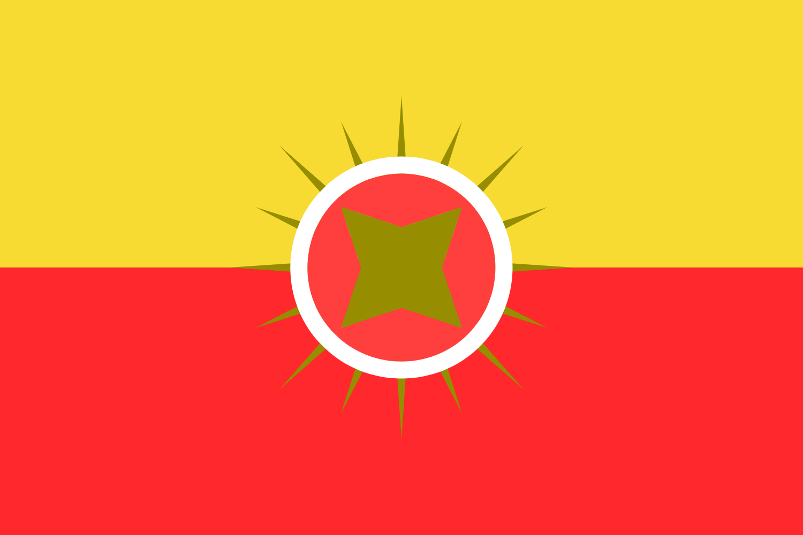
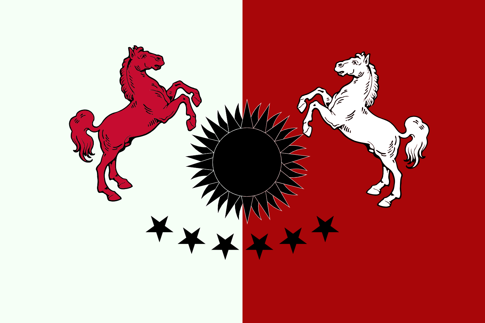
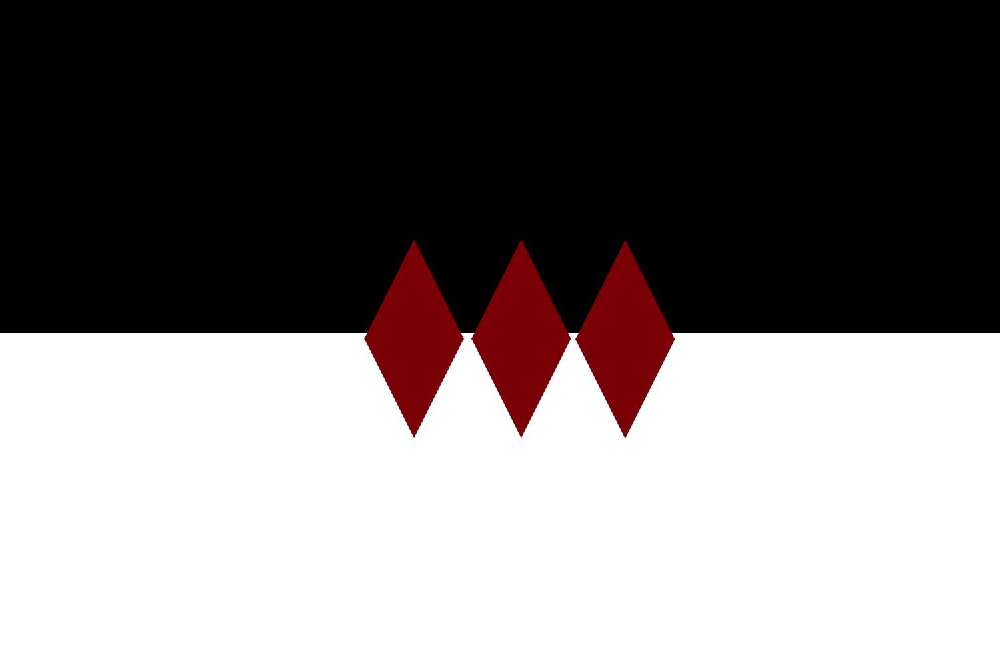
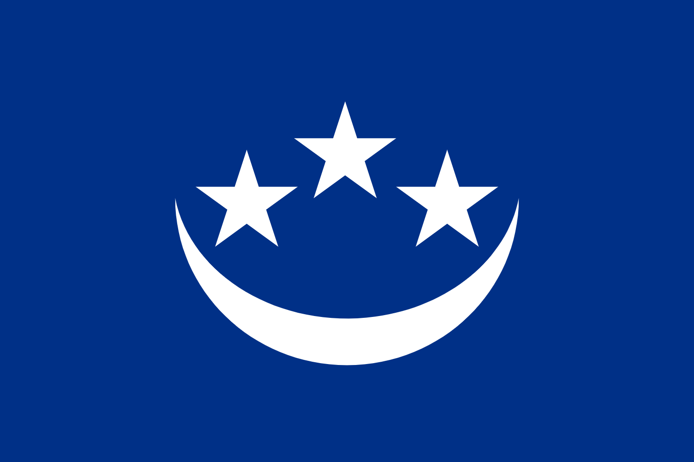
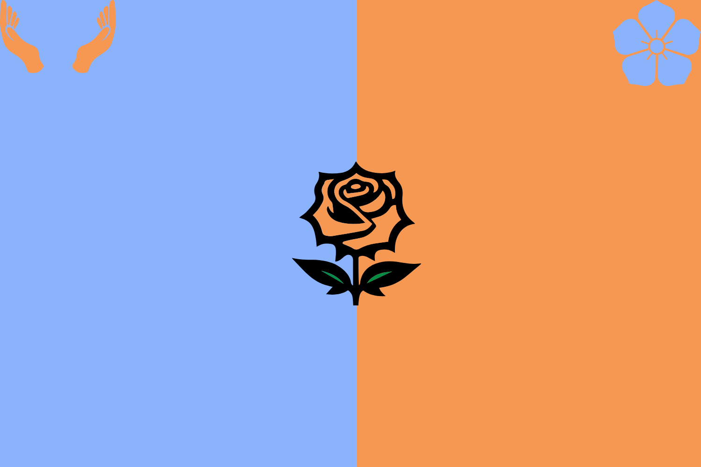
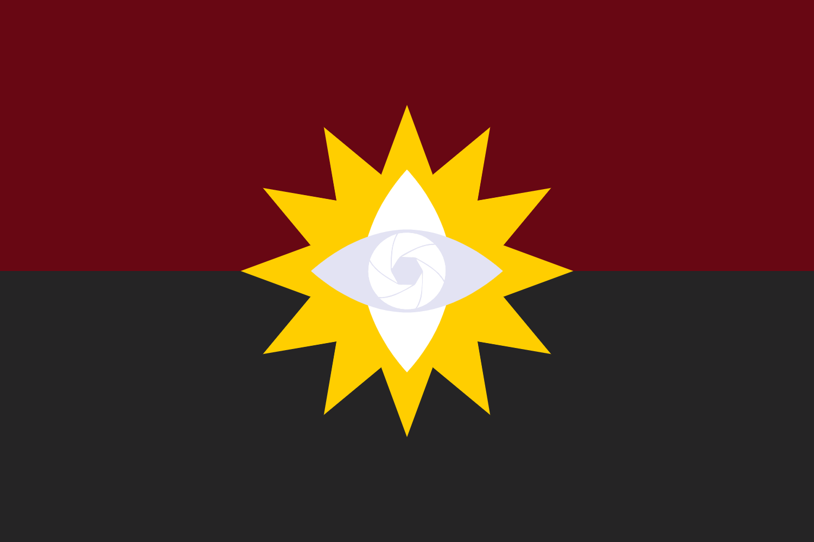
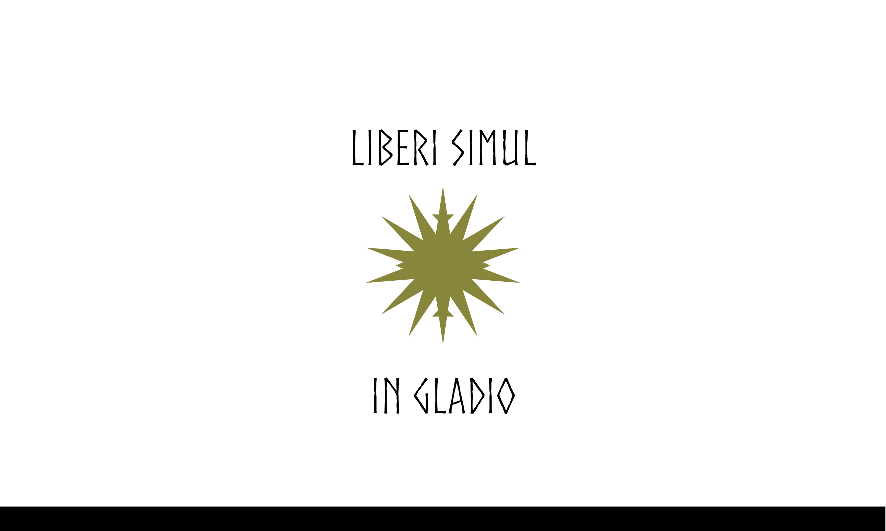

ChafreniaChafrenia é uma nação moldada por honra, disciplina e infantaria. Mesmo depois do retorno da magia, Chafrenia escolheu não depender dela como pilar militar. O resultado é um exército que parece “antigo”, mas funciona: formações firmes, comando rígido e uma cultura que trata recuo como vergonha. Eles se orgulham de vencer monstros e invasões com aço, treino e coragem, e isso faz Chafrenia ser respeitada até por quem discorda do jeito deles.

LaniatLaniat é lembrada como uma terra bonita e um povo gentil, mas com um passado de força militar temida. Durante guerras antigas, ficou famosa por estratégias agressivas com cavalaria, atravessando linhas inimigas em massa para quebrar moral e formação. Hoje, essa violência histórica virou prestígio e carisma internacional. Laniat é vista como “a nação amada”, mas ainda carrega um núcleo estratégico: se precisar, a mesma terra gentil pode voltar a ser uma lâmina.

ElondriaElondria virou o que é por trauma e necessidade. Depois de cair cedo nas campanhas de Trinistia, o povo se revoltou e transformou a derrota em doutrina: defesa, arquitetura e eficiência. Elondria é a nação das muralhas reforçadas, dos sistemas de proteção e das magias defensivas que viraram engenharia. A mentalidade é pragmática: menos glória e mais sobrevivência. Isso faz Elondria ser o tipo de lugar que aguenta cerco, invasão e ataques de criaturas sem colapsar do dia para a noite.

CalmyrionCalmyrion tem duas faces. Para estrangeiros, é brilho, prata, ouro e capital impecável. Para quem vive longe da vitrine, é extorsão, desigualdade e decadência social. As vilas sofrem, a economia é esmagada e a classe nobre vive em outro mundo. A história com colonização élfica deixou cicatrizes e justificativas para uma elite que se enxerga “superior”, reproduzindo crueldades antigas. Calmyrion é linda por fora e podre por dentro, o que a torna politicamente perigosa e instável.

KarrathKarrath é o extremo oposto de Calmyrion no espírito: um território gélido, duro e hostil, com um povo conhecido por hospitalidade e ausência de preconceito de origem. A economia é equilibrada e a força militar é competente, sem ser expansionista. Karrath ganhou respeito pela constância: ajuda quando precisa, não some quando fica difícil. Isso transformou a nação em “favorita” diplomática, alguém em quem se confia quando o continente inteiro está em pânico.

TrivlanTrivlan é a nação mais ágil e agressiva em termos militares. A proximidade constante de facções monstruosas e fenômenos do Além forçou Trivlan a evoluir sempre, criando magias, estratégias e agora tecnologias e veículos. É um povo honroso, mas não ingênuo: prefere infantaria, porém adapta tudo que puder para continuar existindo. Trivlan também carrega peso histórico recente (guerra civil e o retorno da realeza divina), então sua força atual não é só política, é existencial.

NamírhiaNamírhia é a nação do deserto mais quente de Vatria e, ao mesmo tempo, uma das mais marcadas por colonização e invasões externas. Sofreu repetidamente com poderes de fora do continente, e isso deixou um povo endurecido, com memória coletiva de humilhação e revolta. A primeira libertação veio por uma revolta gigantesca, e a segunda por um híbrido (156 D.d), o que dá ao país uma identidade muito própria: resistência, sobrevivência e um senso de “ninguém vai nos salvar”. Namírhia é um barril de pólvora histórico, só esperando um novo motivo para arder.